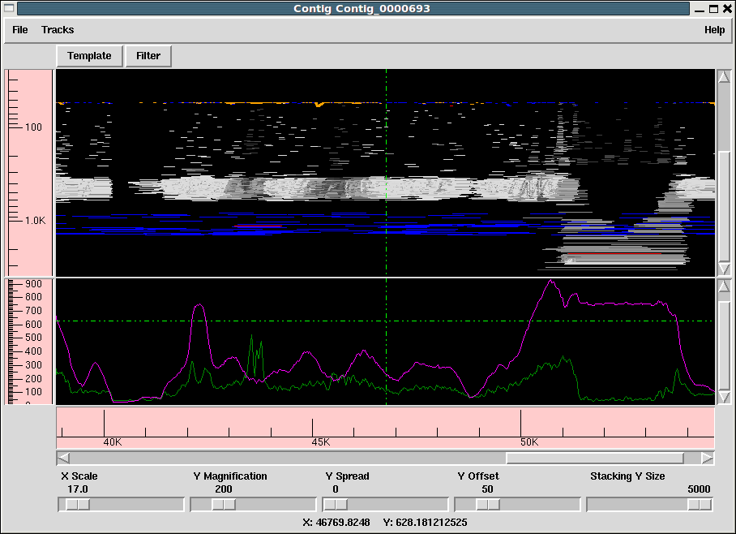
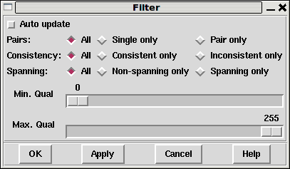
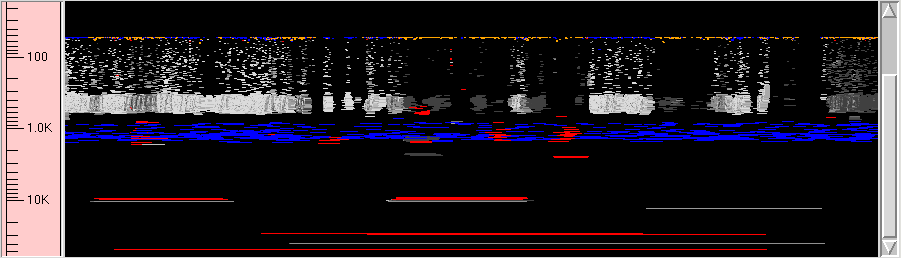
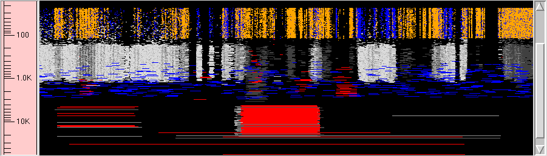
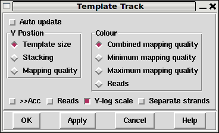
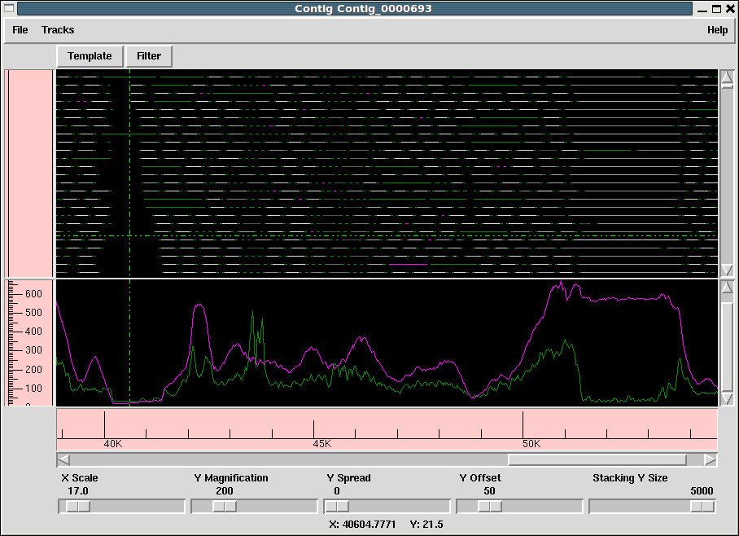
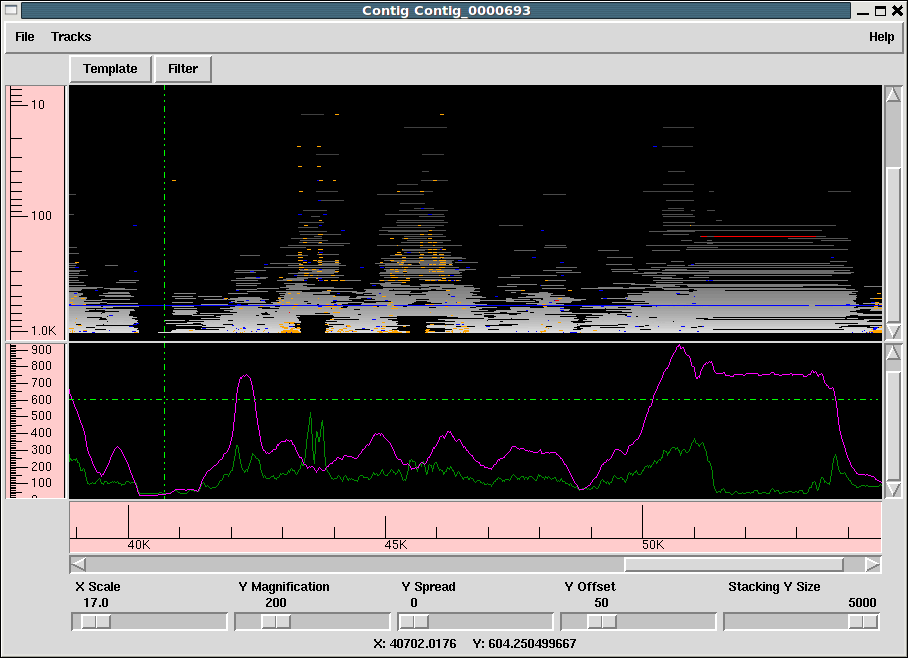

The template display is a graphical overview of a single contig. It allows us to see how much data we have, how long the fragments are and how they relate to each other (whether they are forming valid pairs).

The window consists of one or more tracks, by default showing the reading template layout at the top and a sequence / read-pair coverage plot at the bottom. The Tracks menu allows us to turn these on and off.
Below the main menu bar is a series of buttons that bring up new dialogues for controlling how the data is to be display and what is to be displayed.
Then come a graphic plot per track. A cross-hair automatically tracks the cursor, indicating the X and Y coordinates (in appropriate units) in the status line at the bottom of the window. The track displays can be moved by either using the horizontal and vertical scrollbars at the bottom and right hand edges of the window, or by clicking and dragging the contents of the window. While dragging the display will not update to show newly visible regions of a contig until the left mouse button is released.
Finally the bottom contains a scrollbar and ruler for positioning and a series of controls. The X scale simply controls how many base-pairs of the contig are covered by he window. The X scale number is arbitrary, but is interpreted in an exponential manner so it is easy to rapidly zoom in or zoom out. All other controls in the bottom panel do not affect the reading coverage track, so they are covered in the template track section below.
By default all templates are used for drawing the tracks, but there are times when we may wish to focus on specific problem data or to exclude it from our graphics.

The Filter button at the top of the Template Display brings up the dialogue shown above. Making changes to this dialogue either have an instant impact on the display (when "Auto update" is enabled) or instead only when we hit Apply or OK to dismiss the dialogue.
The Pairs: section allows us to select either reads on all templates, reads that are the sole read for that template, or reads that are paired on a template. Note that the definition of a pair here is strictly dependant on how many reads for a template are in the gap5 database rather than the library preparation strategy. So a paired-end template for which only one read is in the gap5 database (perhaps due to failure to map) is classified as "single".
The Consistency section can be used to select all, consistent only or inconsistent only data. This requires read-paired data (single reads cannot be inconsistent as so are considered as consistent). The interpretation of inconsistent currently is that the two reads of a pair do not point towards one another, but in future releases this is planned to check the correct orientation for that library type as for some constructions it is normal to have reads pointing in the same orientation.
The Spanning section governs whether to display read pairs with one read in this contig and the other read in another contig. Handling templates with more than two reads is still on-going work, but when finished a spanning read-pair will be one with any read not in this contig.
Underneath these are two sliders applied in addition to the above filters. They allow removal of any read or read-pair (depending on the type of data being plotted) with a mapping quality outside the selected range.
This is the main body of the template display window. The default plot will be showing read-pairs, mainly coloured by mapping quality with the insert size governing the Y coordinate. Larger inserts are at the bottom of the track while shorter ones are at the top.
The colours used are as follows:
The row of scale bars at the bottom of the window control how data is to be plotted. They are:
 Template track with Y spread of 0.
 Template track with Y spread of 50.
The layout and type of data in the template track can be controlled using the Template button at the top of the main template display window.

The Y Position section controls how the Y coordinates are computed when plotting data (with X being tied to the position in the assembly or reference). It can be one of three settings.
The default mode. The size of an object is defined to be the number of bases it spans. This is normally the size of a read-pair, or if the pair spans contigs or if only readings are shown it is the size of a single reading instead. Larger objects are at the bottom of the window. This Y method very clearly reveals indels in a mapped assembly. It sometimes also sometimes reveals misassemblies. Given that items of identical size will stack on top of one another, of particular use to this display mode is the Y Spread control in the main window.
 A more traditional view - each and every item is allocated its own non-overlapping Y coordinate (although low Y magnifications may imply these are drawn at the same Y pixel). It is still possible to partially group items by their insert size using the "Stacking Y Size" control in the main window.
 Finally we can display data collated by the mapping score. This is typically only available for mapped assemblies. This plot sometimes helps to reveal regions where all the data present is of poor mapping quality, indicating a likely repeat.
Adjacent to the Y Position frame is the Colour frame. This controls the colour of the lines drawn in the template display rather than their location.
At the bottom of this dialogue is a row of check buttons.
">>Acc" enables accurate mode, but be warned this can be very slow. When the template display is drawn it fetches all data within the visible portion plus a little bit ether side. From this reads from the same template are paired up. However when a template spans a substantially larger range than is shown we may only have fetched one read for this template. We do know that such a template forms a pair, but we do not know the exact location of the other end or even whether it is in this contig. The assumption is that it is not, and the template is drawn in orange. Enabling accurate mode will work out the precise location of the other end and if it is present elsewhere within this contig then the insert size will be correctly determined and the plot adjusted accordingly.
The "Reads" checkbutton (not to be confused with the Reads colour selector) disables all drawing of read-pairing and template lines, instead drawing lines to represent the known DNA sequence instead.
"Y-log scale" controls whether we plot our Y values using log or linear scales.
"Separate strands" attempts to classify all templates as coming from the top or bottom strand of DNA (based on the orientation of the sequences on that template, although sometimes these are conflicting). It then splits the plot in two, forming an approximate mirror image. This may be of use in some transcriptome sequencing experiments.
The depth track shows coverage of both individual readings and read-pairs, where a read-pair counts as +1 coverage over the entire length it spans rather than just the portion directly sequenced.
The filter options for (in)consistent read pairs also apply here, giving the option to only show depth of consistent pairs.